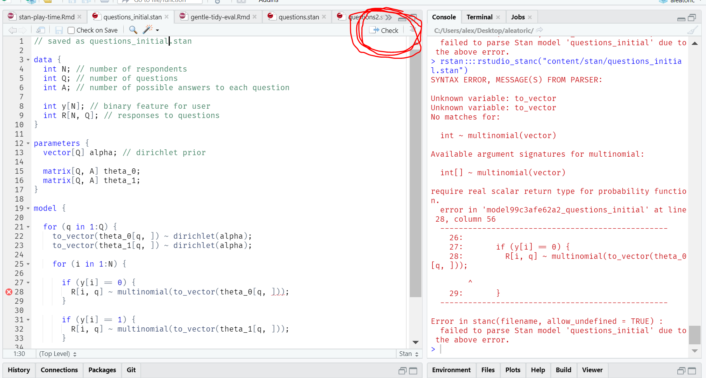
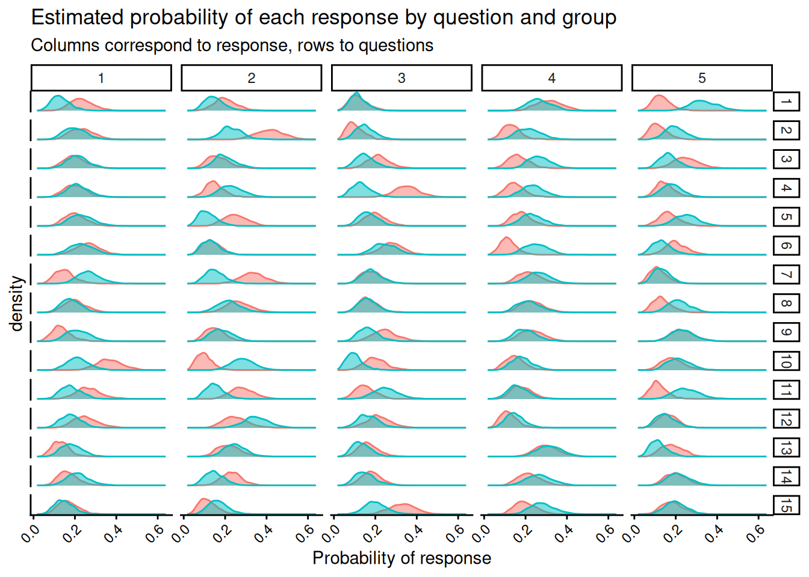

library(tidyverse)
set.seed(27)
Q <- 15
A <- 5
alpha <- rep(5, A)
theta_0 <- gtools::rdirichlet(Q, alpha)
theta_1 <- gtools::rdirichlet(Q, alpha)Motivation
Yesterday, for the first time ever, I coded up a model in Stan and it actually did what I wanted. My current knowledge of Stan is, at best, nascent, but I’ll show you the process I went through to write my first Stan program, pointing out what I wish I’d known along the way.
My goal is to provide a quick and dirty introduction to Stan, hopefully enough to get you started without having to dig into the manual yourself. My focus here is on the language, not Bayesian inference.
If you’re looking for the tutorial portion, scroll down to the section called The bare minimum to get started with Stan.
What is Stan and why might you want to use it?
Stan is Tensorflow for generative statistical models. Just like Tensorflow lets you write the forward pass of a neural net and fits the net for you, Stan lets you write out a generative model and then gives you samples from the posterior.
The big win is flexibility, and creativity: if you can dream up a generative model and write it in Stan, much of the work to use that model in practice is done1.
Like Tensorflow, the downside is the low-level interface, which can be inconvenient for day-to-day work. Luckily, Stan has brms, a much higher level interface that provides a huge amount of infrastructure to make repetitive tasks easy.
The long road to actually writing Stan
I first learned about Stan from Gelman’s blog about three years ago, and first used the Stan ecosystem when I was running into convergence issues with lme4 and my advisor suggested rstanarm.
My senior year I took Daniel Kowal’s fantastic Bayes course. In that class we didn’t use Stan, but I got comfortable with Bayesian inference and MCMC and I started using brms, loo and bayesplot for personal projects.
Intermittently I’ve tried to code up models in raw Stan. I’ve probably tried to code up a model in Stan ten or so times before this, always hitting some roadblock along the way.
In retrospect, I should have just sat down and read the manual sooner, but I really dislike learning new languages by reading dense technical documentation2.
I also think there’d be a lot of value in a publicly available set of Stan exercises, where you would practice translating models from math to Stan, and from Stan to math.
The bare minimum to get started with Stan
What programs look like
I’m not going to formally describe the structure of a Stan program. If you haven’t seen Stan code before, I think a much better approach is to go read a bunch of Stan, even if it doesn’t make sense. I’d start by taking a look through the example models in the Stan manual, then reading blog posts. The first thing you want to pay attention to is the different “blocks,” and what goes in data versus parameters versus model.
To get you started, here’s simple linear regression on a single predictor, taken from the Stan manual:
data {
int<lower=0> N;
vector[N] x;
vector[N] y;
}
parameters {
real alpha;
real beta;
real<lower=0> sigma;
}
model {
y ~ normal(alpha + beta * x, sigma);
}Note that every line ends with a semi-colon (;).
Types
There are two scalar types in Stan programs: ints and reals. Integers are discrete and real numbers are continuous. You should think about these like single numbers.
Unlike R, you’ll need to declare any objects you want to work with before you start working with them. For example
real alpha;says that alpha is a number you want to use. Numbers can have upper and lower bounds (for example, you’ll want numbers representing variances to be non-negative):
real<lower=0> alpha;Integers can promoted to reals, but reals are never demoted to integers. The other two objects you should know about are vectors and matrixs. vectors and matrixs contain real elements. When you declare vectors and matrixs, you have to tell Stan how big they are:
vector[N] x; // a vector with N elements
matrix[N, M] A; // an N x M matrixIf you declare variable bounds, you do that before the brackets:
vector<lower=0, upper=1>[N] p;You can index into vectors much like other mathematical libraries, and do things like matrix-vector multiplication:
x[1]
A[2, 3]
A * x // matrix vector multiplication
x' * A * x // calculating a quadratic form (aprostrophe means transpose)Basic arithmetic is probably enough to get you started, but when you need to know how to do more mathematical operations, you’ll want to consult the function reference. Be sure to bookmark both the function reference and the manual itself.
There are some other building blocks, but they are really just icing on top of this cake. For example, if you need a vector with elements constrained to sum to one, you’ll want to use simplex. But to understand simplex, you really only need to understand what a vector is.
Arrays & Dimension
The fundamental objects in Stan are ints, reals, vectors and matrixs. Oftentimes, we’ll want to work with collections of these objects. For this we need one final ingredient: arrays. Arrays in Stan work much like Numpy arrays, or MATLAB arrays, but declaring them is slightly more involved.
Suppose we want to work with an integer array. Then we might write
int Y[N, M];which means we want an N by M array, where each element of the array is an integer (each element in an array must be the same type). If you wanted integers between 0 and 5, you would write:
int<lower=0, upper=5> Y[N, M];Note that type goes first, and the array dimensions come after the variable name. That is, if we write:
vector[p] theta[N];it means we want an array with N elements, where each element is vector with p elements.
Writing & Debugging Stan
When you first get started, I recommend copy-pasting existing Stan code and modifying it, rather than writing the code from scratch. When I write Stan, I typically keep several tabs open that just have Stan models on them, and when I get stuck I scan through them for lines that look like they might work.
I write Stan in RStudio. My best friend is the Check button, which runs the Stan parser and tells you if there are any syntax errors. Sometimes I can understand the error message, but I often end up Googling them.
For runtime errors, my only trick at the moment is to use the print() function, which works in Stan much like it does in R.
Success: a first Stan program
Suppose we have \(N\) survey respondents that each answer \(Q\) questions, where each question has \(A\) possible answers. There are two groups of respondents and we would like to: (1) compare how their response probabilities differ, and (2) given a new set of responses, predict which group they belong in.
Before you write any code at all, I highly recommend you write your model down on paper. Scribbling down something like the following always clarifies my thinking.
Let \(R_{i, j}\) be the response of the \(i^{th}\) respondent to the \(j^{th}\) question, and let \(y_i \in \{0, 1\}\) be their group membership. Then suppose
\[\begin{align} &R_{i, j} | \theta_j \sim \mathrm{Categorical}(\theta_j) \\ &\theta_j | y_i \sim \mathrm{Dirichlet}(5) \end{align}\]
So we let each group have a different distribution of responses to each question, and shrink these distributions toward each other with a Dirichlet prior with 5 pseudo-counts in each response category. This regularization makes sense if a-priori you expect the two groups to respond in similar ways.
Let’s start by generating some fake data from our proposed data generating process. First we input some problem size parameters and the Dirichlet prior:
Now we figure out how to sample once:
sample_one <- function(theta) {
R <- numeric(Q)
for (q in 1:Q)
R[q] <- sample(1:A, 1, prob = theta[q, ])
names(R) <- paste0("q", 1:Q)
as.list(R)
}which naturally leads into sampling \(n\) times
sample_n <- function(theta, n, id) {
samples <- map_dfr(1:n, ~sample_one(theta))
samples <- add_column(samples, y = id, .before = TRUE)
mutate_all(samples, as.integer)
}Then we sample 35 times from group 0 and 35 times from group 1, and look at the resulting data:
df <- sample_n(theta_0, 35, id = 0) %>%
bind_rows(sample_n(theta_1, 35, id = 1))
df# A tibble: 70 × 16
y q1 q2 q3 q4 q5 q6 q7 q8 q9 q10 q11 q12
<int> <int> <int> <int> <int> <int> <int> <int> <int> <int> <int> <int> <int>
1 0 4 1 1 5 4 5 1 1 5 4 1 3
2 0 2 2 4 3 4 3 2 2 3 3 2 2
3 0 4 2 5 3 5 1 2 4 3 3 2 2
4 0 2 2 1 3 1 4 2 4 4 1 2 4
5 0 5 1 4 4 4 1 4 4 4 1 2 1
6 0 3 2 5 2 3 3 4 4 1 5 4 5
7 0 1 4 2 1 3 3 2 1 4 1 4 1
8 0 4 1 3 2 1 3 3 3 3 1 2 5
9 0 5 1 1 1 3 1 4 4 3 1 1 3
10 0 4 2 3 3 2 1 3 1 3 5 1 2
# ℹ 60 more rows
# ℹ 3 more variables: q13 <int>, q14 <int>, q15 <int>Now we need some Stan code. I started by copy-pasting the code from this blog post by Jim Savage, which solves a related (but more complicated) problem. Then I blindly played with things and somehow ended up with this:
// survey_0.stan
data {
int N; // number of respondents
int Q; // number of questions
int A; // number of possible answers to each question
int y[N]; // group membership for each user
int R[N, Q]; // responses to questions
}
parameters {
vector[Q] alpha; // dirichlet prior
matrix[Q, A] theta_0;
matrix[Q, A] theta_1;
}
model {
for (q in 1:Q) {
to_vector(theta_0[q, ]) ~ dirichlet(alpha);
to_vector(theta_1[q, ]) ~ dirichlet(alpha);
for (i in 1:N) {
if (y[i] == 0) {
R[i, q] ~ multinomial(to_vector(theta_0[q, ]));
}
if (y[i] == 1) {
R[i, q] ~ multinomial(to_vector(theta_1[q, ]));
}
}
}
}
}This didn’t run at all, and in fact was not even syntactically correct, but it was a starting point:

I got stuck here for quite a while, but the Modern Statistical Workflow slack kindly pointed out that:
theta_0andtheta_1needed to be arrays ofsimplexs- There’s an extra
}(oops!) - The correct way to index into a matrix is
theta_1[q, :], nottheta_1[q, :]
At this point I finally realized I needed to read the Stan manual in earnest, and I decided to solve a simpler problem, where both group 0 and group 1 have the same parameter theta. This eventually resulted in the following:
// survey_1.stan
data {
int N; // number of respondents
int Q; // number of questions
int A; // number of possible answers to each question
int R[N, Q]; // responses to questions
}
parameters {
vector<lower=0>[A] alpha; // dirichlet prior parameter
simplex[A] theta[Q]; // response probabilities for each question
}
model {
for (q in 1:Q) {
theta[q] ~ dirichlet(alpha);
for (i in 1:N) {
R[i, q] ~ categorical(theta[q]);
}
}
}Now we compile the model. Compilation takes around a minute or two, and if you mainly use R and Python like I do, it takes a while to get used to. Then we set up some Stan options:
library(rstan)
# prevent tedious re-compilation during interactive Stan dev
rstan_options(auto_write = TRUE)
# use multiple cores during sampling. i typically leave one
# core free to keep my potato of a computer from lagging wildly
# during sampling
options(mc.cores = parallel::detectCores())For this blog post, I’m using stan chunks in my .Rmd file, but if you’re following along, you should put the Stan code into a file survey_1.stan. In general, I recommend keeping each version of your model in a separate .stan file.
Anyways, you would run:
m1_path <- "path/to/survey_1.stan"
m1 <- stan_model(m1_path)Now that the model has compiled, we can shove some data into a list and sample from it.
data <- list(
R = as.matrix(select(df, -y)),
N = nrow(df),
y = df$y,
Q = Q,
A = A
)
# `refresh = 0` hides the highly verbose messages that are
# the default during sampling. if you are using multiple cores
# you may also want to set `show_progress = FALSE`, which
# prevents the those messages from showing up in a pop-up window
fit1 <- sampling(m1, data = data, chains = 2, iter = 1000, refresh = 0)Warning: There were 132 divergent transitions after warmup. See
https://mc-stan.org/misc/warnings.html#divergent-transitions-after-warmup
to find out why this is a problem and how to eliminate them.Warning: There were 685 transitions after warmup that exceeded the maximum treedepth. Increase max_treedepth above 10. See
https://mc-stan.org/misc/warnings.html#maximum-treedepth-exceededWarning: There were 1 chains where the estimated Bayesian Fraction of Missing Information was low. See
https://mc-stan.org/misc/warnings.html#bfmi-lowWarning: Examine the pairs() plot to diagnose sampling problemsWarning: The largest R-hat is 2.14, indicating chains have not mixed.
Running the chains for more iterations may help. See
https://mc-stan.org/misc/warnings.html#r-hatWarning: Bulk Effective Samples Size (ESS) is too low, indicating posterior means and medians may be unreliable.
Running the chains for more iterations may help. See
https://mc-stan.org/misc/warnings.html#bulk-essWarning: Tail Effective Samples Size (ESS) is too low, indicating posterior variances and tail quantiles may be unreliable.
Running the chains for more iterations may help. See
https://mc-stan.org/misc/warnings.html#tail-essprint(fit1, pars = "alpha", probs = c(0.025, 0.5, 0.975))Inference for Stan model: anon_model.
2 chains, each with iter=1000; warmup=500; thin=1;
post-warmup draws per chain=500, total post-warmup draws=1000.
mean se_mean sd 2.5% 50% 97.5% n_eff Rhat
alpha[1] 1049788.9 571071.9 1081065.2 216259.4 596838.7 5239008 4 1.50
alpha[2] 966344.8 455418.7 916521.5 221430.2 644196.4 4535990 4 1.46
alpha[3] 956020.3 509425.0 966268.2 180645.1 567420.8 4698098 4 1.50
alpha[4] 1291672.4 729440.3 1344858.7 245605.8 716285.4 6469577 3 1.52
alpha[5] 863943.5 452132.4 863443.0 158560.7 521376.2 4209467 4 1.50
Samples were drawn using NUTS(diag_e) at Wed Apr 15 15:48:06 2026.
For each parameter, n_eff is a crude measure of effective sample size,
and Rhat is the potential scale reduction factor on split chains (at
convergence, Rhat=1).It works! That’s great, sampling is actually happening. We get a lot warnings from Stan when we fit this model; these tell us that something is probably wrong. Here I realized that I should actually pass alpha to sampling, and that I’d actually given it a hyperprior by accident. So I changed this, and gave group 0 and group 1 different parameters theta, resulting in:
// survey_2.stan
data {
int N; // number of respondents
int Q; // number of questions
int A; // number of possible answers to each question
int<lower=0, upper=1> y[N]; // binary feature for user
int<lower=1, upper=5> R[N, Q]; // responses to questions
vector<lower=0>[A] alpha; // dirichlet prior parameter
}
parameters {
// response probabilities for each question
simplex[A] theta_0[Q]; // for group 0
simplex[A] theta_1[Q]; // for group 1
}
model {
for (q in 1:Q) {
theta_0[q] ~ dirichlet(alpha);
theta_1[q] ~ dirichlet(alpha);
for (i in 1:N) {
if (y[i] == 0) {
R[i, q] ~ categorical(theta_0[q]);
}
if (y[i] == 1) {
R[i, q] ~ categorical(theta_1[q]);
}
}
}
}We compile this and give it alpha, then take a look at the resulting theta_0:
data <- list(
R = as.matrix(select(df, -y)),
N = nrow(df),
y = df$y,
Q = Q,
A = A,
alpha = alpha
)
fit2 <- sampling(m2, data = data, chains = 2, iter = 1000, refresh = 0)
print(fit2, pars = "theta_0", probs = c(0.025, 0.5, 0.975))Inference for Stan model: anon_model.
2 chains, each with iter=1000; warmup=500; thin=1;
post-warmup draws per chain=500, total post-warmup draws=1000.
mean se_mean sd 2.5% 50% 97.5% n_eff Rhat
theta_0[1,1] 0.23 0 0.05 0.13 0.23 0.34 1663 1.00
theta_0[1,2] 0.20 0 0.05 0.11 0.20 0.31 1073 1.00
theta_0[1,3] 0.12 0 0.04 0.05 0.11 0.20 1413 1.00
theta_0[1,4] 0.31 0 0.06 0.20 0.31 0.45 1162 1.00
theta_0[1,5] 0.13 0 0.04 0.06 0.13 0.22 1007 1.00
theta_0[2,1] 0.23 0 0.05 0.14 0.23 0.34 1202 1.00
theta_0[2,2] 0.42 0 0.07 0.29 0.42 0.54 1352 1.00
theta_0[2,3] 0.10 0 0.04 0.04 0.09 0.19 1003 1.00
theta_0[2,4] 0.13 0 0.04 0.06 0.13 0.24 1412 1.00
theta_0[2,5] 0.12 0 0.04 0.05 0.11 0.21 1386 1.00
theta_0[3,1] 0.20 0 0.05 0.11 0.19 0.30 1339 1.00
theta_0[3,2] 0.17 0 0.05 0.08 0.16 0.26 1266 1.00
theta_0[3,3] 0.22 0 0.05 0.12 0.21 0.33 1358 1.00
theta_0[3,4] 0.17 0 0.05 0.08 0.16 0.27 1331 1.00
theta_0[3,5] 0.25 0 0.06 0.15 0.25 0.36 1284 1.00
theta_0[4,1] 0.20 0 0.05 0.11 0.19 0.31 1105 1.00
theta_0[4,2] 0.15 0 0.05 0.07 0.15 0.25 1980 1.00
theta_0[4,3] 0.35 0 0.06 0.24 0.35 0.48 926 1.00
theta_0[4,4] 0.15 0 0.04 0.08 0.15 0.25 1049 1.00
theta_0[4,5] 0.15 0 0.04 0.07 0.14 0.24 922 1.00
theta_0[5,1] 0.20 0 0.05 0.11 0.20 0.30 1394 1.00
theta_0[5,2] 0.25 0 0.06 0.15 0.25 0.38 1232 1.00
theta_0[5,3] 0.20 0 0.05 0.11 0.20 0.30 1101 1.00
theta_0[5,4] 0.18 0 0.05 0.10 0.18 0.29 1104 1.00
theta_0[5,5] 0.17 0 0.05 0.08 0.16 0.27 877 1.00
theta_0[6,1] 0.27 0 0.06 0.16 0.26 0.38 1354 1.00
theta_0[6,2] 0.13 0 0.04 0.06 0.13 0.23 1218 1.00
theta_0[6,3] 0.28 0 0.06 0.17 0.28 0.40 1569 1.00
theta_0[6,4] 0.12 0 0.04 0.05 0.11 0.21 1480 1.00
theta_0[6,5] 0.20 0 0.05 0.11 0.20 0.32 1243 1.00
theta_0[7,1] 0.15 0 0.04 0.07 0.15 0.24 1433 1.00
theta_0[7,2] 0.34 0 0.06 0.23 0.34 0.46 1322 1.00
theta_0[7,3] 0.18 0 0.05 0.09 0.18 0.28 1066 1.00
theta_0[7,4] 0.21 0 0.05 0.12 0.21 0.33 1334 1.00
theta_0[7,5] 0.12 0 0.04 0.05 0.11 0.20 854 1.00
theta_0[8,1] 0.20 0 0.05 0.12 0.20 0.30 1279 1.00
theta_0[8,2] 0.27 0 0.06 0.16 0.26 0.39 1046 1.00
theta_0[8,3] 0.17 0 0.05 0.08 0.16 0.26 1084 1.00
theta_0[8,4] 0.23 0 0.05 0.14 0.23 0.34 1156 1.00
theta_0[8,5] 0.13 0 0.04 0.06 0.13 0.24 1221 1.00
theta_0[9,1] 0.13 0 0.04 0.06 0.13 0.23 1026 1.00
theta_0[9,2] 0.15 0 0.05 0.07 0.14 0.24 1041 1.00
theta_0[9,3] 0.25 0 0.05 0.15 0.25 0.37 1175 1.00
theta_0[9,4] 0.23 0 0.05 0.14 0.23 0.34 1310 1.00
theta_0[9,5] 0.23 0 0.06 0.14 0.23 0.36 1326 1.00
theta_0[10,1] 0.36 0 0.06 0.25 0.36 0.50 1197 1.00
theta_0[10,2] 0.10 0 0.04 0.04 0.09 0.18 1309 1.00
theta_0[10,3] 0.20 0 0.05 0.11 0.20 0.32 1025 1.00
theta_0[10,4] 0.15 0 0.04 0.07 0.15 0.24 1278 1.00
theta_0[10,5] 0.19 0 0.05 0.10 0.18 0.30 1114 1.00
theta_0[11,1] 0.27 0 0.05 0.17 0.26 0.37 1312 1.00
theta_0[11,2] 0.28 0 0.06 0.18 0.28 0.40 1267 1.00
theta_0[11,3] 0.15 0 0.04 0.07 0.15 0.24 1183 1.00
theta_0[11,4] 0.18 0 0.05 0.10 0.18 0.29 1080 1.00
theta_0[11,5] 0.12 0 0.04 0.05 0.11 0.20 1304 1.00
theta_0[12,1] 0.25 0 0.06 0.15 0.25 0.37 1287 1.00
theta_0[12,2] 0.25 0 0.06 0.15 0.25 0.37 1202 1.00
theta_0[12,3] 0.22 0 0.05 0.12 0.21 0.32 1589 1.00
theta_0[12,4] 0.12 0 0.04 0.04 0.11 0.21 1121 1.00
theta_0[12,5] 0.17 0 0.05 0.09 0.16 0.27 1476 1.00
theta_0[13,1] 0.13 0 0.04 0.06 0.13 0.22 1295 1.00
theta_0[13,2] 0.22 0 0.05 0.12 0.21 0.33 1577 1.00
theta_0[13,3] 0.17 0 0.05 0.08 0.16 0.27 1475 1.00
theta_0[13,4] 0.30 0 0.06 0.18 0.29 0.43 1405 1.00
theta_0[13,5] 0.18 0 0.05 0.10 0.18 0.29 1407 1.00
theta_0[14,1] 0.17 0 0.05 0.09 0.16 0.26 1297 1.00
theta_0[14,2] 0.23 0 0.05 0.14 0.23 0.35 1033 1.00
theta_0[14,3] 0.18 0 0.05 0.10 0.18 0.30 599 1.00
theta_0[14,4] 0.22 0 0.05 0.12 0.21 0.33 938 1.00
theta_0[14,5] 0.20 0 0.05 0.11 0.20 0.31 856 1.01
theta_0[15,1] 0.17 0 0.05 0.09 0.16 0.27 1226 1.00
theta_0[15,2] 0.12 0 0.04 0.05 0.11 0.22 1236 1.00
theta_0[15,3] 0.34 0 0.06 0.21 0.34 0.46 1153 1.00
theta_0[15,4] 0.20 0 0.05 0.11 0.20 0.30 1192 1.00
theta_0[15,5] 0.18 0 0.05 0.10 0.18 0.29 939 1.00
Samples were drawn using NUTS(diag_e) at Wed Apr 15 15:48:59 2026.
For each parameter, n_eff is a crude measure of effective sample size,
and Rhat is the potential scale reduction factor on split chains (at
convergence, Rhat=1).Note that the warnings go away! The new model actually makes sense, and as a consequence no longer stretches the sampler to a breaking point. At this point I has happy with the core logic of the model, so I used ShinyStan to check MCMC diagnostics and make sure that all the chains were mixing, etc:
shinystan::launch_shinystan(fit2)That all checked out, which isn’t a surprise, since we’re effectively estimating a bunch of proportions, so it would be weird if things started exploding.
But really, my original idea was to see how well this model would predict respondent group, so we need to do some more work.
I wanted \(P(y = 0)\) given a person’s set of responses \(R_{i1}, ..., R_{iA}\). This was one of those instances were I was intimated by how to figure that out, but then it all became clear with a minute or two of pen and paper work.
Bayes rule gives us that \(P(y_i = 0 | R_{i1}, ..., R_{iA})\) equals
\[\begin{align} P(R_{i1}, ..., R_{iA} | y_i = 0) P(y_i = 0) \over P(R_{i1}, ..., R_{iA} | y_i = 0) P(y_i = 0) + P(R_{i1}, ..., R_{iA} | y_i = 1) P(y_i = 1) \end{align}\]
to deal with \(P(y_i = 0)\) and \(P(y_i = 1)\) we need a prior on \(y\). I just assumed that \(P(y_i = 0) = P(y_i = 1) = 0.5\), so those terms cancel. Next we can also assume that questions are independent from other questions, and continue with:
\[\begin{align} &= {\prod_{j=1}^A P(R_{ij} | y_i = 0) \over \prod_{j=1}^A P(R_{ij} | y_i = 0) + \prod_{j=1}^A P(R_{ij} | y_i = 1)} \\ &= {\prod_{j=1}^A \theta_{j, 0} \over \prod_{j=1}^A \theta_{j, 0} + \prod_{j=1}^A \theta_{j, 1}} \end{align}\]
This is notationally intense because of all the indices, but hopefully the idea is clear. In any case, this doesn’t involve any sampling, so we code it up in the generated quantities block:
// survey_3.stan
data {
int N; // number of respondents
int Q; // number of questions
int A; // number of possible answers to each question
int<lower=0, upper=1> y[N]; // binary feature for user
int<lower=1, upper=5> R[N, Q]; // responses to questions
vector<lower=0>[A] alpha; // dirichlet prior parameter
}
parameters {
// response probabilities for each question
simplex[A] theta_0[Q]; // for group 0
simplex[A] theta_1[Q]; // for group 1
}
model {
for (q in 1:Q) {
theta_0[q] ~ dirichlet(alpha);
theta_1[q] ~ dirichlet(alpha);
for (i in 1:N) {
if (y[i] == 0) {
R[i, q] ~ categorical(theta_0[q]);
}
if (y[i] == 1) {
R[i, q] ~ categorical(theta_1[q]);
}
}
}
}
generated quantities {
vector<lower=0, upper=1>[N] p; // probability each user is in class 0
for (i in 1:N) {
// probability of user's response for each response
vector[Q] pr_0; // if they are in class 0
vector[Q] pr_1; // if they are in class 1
for (q in 1:Q) {
// get the actual response
int response = R[i, q];
// get the corresponding theta, which is also
// the probability we're interested in
pr_0[q] = theta_0[q, response];
pr_1[q] = theta_1[q, response];
}
// multiply response probabilities for each question together
// and then normalize
p[i] = prod(pr_0) / (prod(pr_0) + prod(pr_1));
}
}And we can throw this all at Stan and see what happens:
fit3 <- sampling(m3, data = data, chains = 2, iter = 1000)
print(fit3, pars = "p", probs = c(0.025, 0.5, 0.975))4 1486 1
p[31] 0.91 0.00 0.12 0.54 0.95 1.00 1189 1
p[32] 0.55 0.01 0.26 0.07 0.57 0.96 1321 1
p[33] 0.66 0.01 0.23 0.17 0.71 0.97 1447 1
p[34] 0.80 0.01 0.20 0.26 0.86 0.99 1160 1
p[35] 0.95 0.00 0.07 0.75 0.97 1.00 855 1
p[36] 0.47 0.01 0.26 0.05 0.45 0.94 1675 1
p[37] 0.54 0.01 0.27 0.06 0.56 0.96 1649 1
p[38] 0.30 0.01 0.22 0.02 0.23 0.82 1509 1
p[39] 0.17 0.01 0.18 0.01 0.11 0.68 842 1
p[40] 0.26 0.01 0.24 0.01 0.20 0.84 1280 1
p[41] 0.14 0.00 0.16 0.00 0.08 0.56 1015 1
p[42] 0.37 0.01 0.26 0.03 0.33 0.90 1896 1
p[43] 0.14 0.00 0.17 0.00 0.08 0.65 1163 1
p[44] 0.33 0.01 0.24 0.02 0.28 0.85 1449 1
p[45] 0.10 0.00 0.12 0.00 0.05 0.47 1376 1
p[46] 0.58 0.01 0.26 0.08 0.61 0.96 1776 1
p[47] 0.08 0.00 0.11 0.00 0.04 0.40 841 1
p[48] 0.01 0.00 0.03 0.00 0.00 0.08 747 1
p[49] 0.03 0.00 0.06 0.00 0.01 0.19 945 1
p[50] 0.18 0.01 0.19 0.01 0.11 0.70 1167 1
p[51] 0.15 0.01 0.16 0.00 0.08 0.61 997 1
p[52] 0.30 0.01 0.24 0.01 0.23 0.86 1254 1
p[53] 0.06 0.00 0.09 0.00 0.02 0.30 630 1
p[54] 0.55 0.01 0.26 0.07 0.57 0.96 1941 1
p[55] 0.29 0.01 0.24 0.02 0.22 0.83 1324 1
p[56] 0.67 0.01 0.24 0.12 0.72 0.98 1532 1
p[57] 0.14 0.00 0.16 0.00 0.08 0.62 1098 1
p[58] 0.33 0.01 0.24 0.02 0.29 0.87 1318 1
p[59] 0.24 0.01 0.22 0.01 0.17 0.80 1295 1
p[60] 0.01 0.00 0.02 0.00 0.00 0.06 506 1
p[61] 0.09 0.00 0.11 0.00 0.05 0.44 996 1
p[62] 0.43 0.01 0.27 0.03 0.40 0.92 1552 1
p[63] 0.25 0.01 0.21 0.01 0.19 0.77 1303 1
p[64] 0.01 0.00 0.03 0.00 0.00 0.08 1011 1
p[65] 0.20 0.01 0.19 0.01 0.14 0.69 1083 1
p[66] 0.19 0.01 0.19 0.01 0.12 0.71 1162 1
p[67] 0.05 0.00 0.08 0.00 0.02 0.28 1108 1
p[68] 0.12 0.01 0.14 0.00 0.06 0.53 722 1
p[69] 0.16 0.01 0.17 0.01 0.10 0.67 777 1
p[70] 0.18 0.01 0.19 0.00 0.11 0.73 1117 1
Samples were drawn using NUTS(diag_e) at Wed Apr 15 15:49:55 2026.
For each parameter, n_eff is a crude measure of effective sample size,
and Rhat is the potential scale reduction factor on split chains (at
convergence, Rhat=1).When \(Q\) gets big, we can have this p get wonky, turning into exact zeros or ones. At this point I remembered that multiplying probabilities together can cause an explosion because things get small very quickly, and computers do not like small numbers.
We can do the standard trick and take sums in log space, rather than multiplying in the original space to fix this. At the same time, let’s add in some prediction functionality. There are a couple ways to do this at the moment.
I decided to pass unlabelled data into Stan, and wrote a function to prevent duplicate code. The function goes in its own block. It took me a while to figure out how to get the function signature right, and how variable scoping worked, but I eventually got to:
// survey_4.stan
functions {
/**
* class_prob
*
* Given an array of responses and probabilities for each response
* for class 0 and class 1, calculate the probability that each
* respondent is in class 0 via Bayes rule. In the training set,
* the actual class of respondent `i` is given by `y[i]`.
*
* We assume that responses to different questions are independent
* and that each class is equally likely. That is, we take
* P(y=1) = P(y=0) = 0.5, and thus these terms cancel.
*
* @param R A 2-array of integers, where each row corresponds to a
* a respondent, and each column corresponds to a question. Elements
* can be 1, 2, ..., A.
*
* @param theta_0 A 2-array of response probabilities for class 0.
* That is, `theta_0[q, r]` is the probability of (integer-valued)
* response `r` to question number `q`.
*
* @param theta_1 A 2-array of response probabilities for class 1.
*
* @return A vector of probabilities that each user is in class 0.
* This vector has the same number of elements as there are rows
* in R.
*/
// note the type signatures here!
vector class_prob(int[,] R, vector[] theta_0, vector[] theta_1) {
real p_0;
real p_1;
int N = dims(R)[1];
int Q = dims(R)[2];
vector[N] p;
for (i in 1:N) {
vector[Q] pr_0;
vector[Q] pr_1;
for (q in 1:Q) {
pr_0[q] = theta_0[q, R[i, q]];
pr_1[q] = theta_1[q, R[i, q]];
}
// take the product of probabilities across all questions
// since we assume responses to different questions are
// independent. work in log space for numerical stability
p_0 = exp(sum(log(pr_0)));
p_1 = exp(sum(log(pr_1)));
p[i] = p_0 / (p_0 + p_1);
}
return(p);
}
}
data {
int Q; // number of questions
int A; // number of possible answers to each question
int N; // number of respondents
int new_N; // number of unlabelled respondents
int<lower=1, upper=5> R[N, Q]; // responses to questions (train)
int<lower=1, upper=5> new_R[new_N, Q]; // responses to questions (test)
int<lower=0, upper=1> y[N]; // binary feature for user
vector<lower=0>[A] alpha; // dirichlet prior parameter
}
parameters {
// response probabilities for each question
simplex[A] theta_0[Q]; // for group 0
simplex[A] theta_1[Q]; // for group 1
}
model {
for (q in 1:Q) {
theta_0[q] ~ dirichlet(alpha);
theta_1[q] ~ dirichlet(alpha);
for (i in 1:N) {
if (y[i] == 0) {
R[i, q] ~ categorical(theta_0[q]);
}
if (y[i] == 1) {
R[i, q] ~ categorical(theta_1[q]);
}
}
}
}
generated quantities {
vector[N] pred = class_prob(R, theta_0, theta_1);
vector[new_N] new_pred = class_prob(new_R, theta_0, theta_1);
}Now we need to generate a test set to predict on, and do the prediction.
new_df <- sample_n(theta_0, 35, id = 0) %>%
bind_rows(sample_n(theta_1, 35, id = 1))
new_data <- list(
R = as.matrix(select(df, -y)),
N = nrow(df),
y = df$y,
new_R = as.matrix(select(new_df, -y)),
new_N = nrow(new_df),
Q = Q,
A = A,
alpha = alpha
)
fit4 <- sampling(m4, data = new_data, chains = 2, iter = 1000, refresh = 0)
print(fit4, pars = "new_pred", probs = c(0.025, 0.5, 0.975))Inference for Stan model: anon_model.
2 chains, each with iter=1000; warmup=500; thin=1;
post-warmup draws per chain=500, total post-warmup draws=1000.
mean se_mean sd 2.5% 50% 97.5% n_eff Rhat
new_pred[1] 0.96 0.00 0.06 0.78 0.98 1.00 919 1.00
new_pred[2] 0.56 0.01 0.26 0.08 0.58 0.97 1563 1.00
new_pred[3] 0.83 0.01 0.19 0.29 0.91 1.00 805 1.00
new_pred[4] 0.93 0.00 0.10 0.65 0.97 1.00 1065 1.00
new_pred[5] 0.20 0.01 0.20 0.01 0.12 0.76 1035 1.00
new_pred[6] 0.79 0.01 0.20 0.26 0.87 0.99 861 1.00
new_pred[7] 0.97 0.00 0.04 0.85 0.99 1.00 866 1.00
new_pred[8] 0.60 0.01 0.27 0.08 0.63 0.97 1132 1.00
new_pred[9] 0.49 0.01 0.27 0.04 0.48 0.94 1485 1.00
new_pred[10] 0.85 0.01 0.18 0.29 0.92 1.00 920 1.00
new_pred[11] 0.88 0.00 0.15 0.45 0.93 1.00 931 1.00
new_pred[12] 0.83 0.01 0.18 0.34 0.90 0.99 1018 1.00
new_pred[13] 0.81 0.01 0.18 0.30 0.87 0.99 961 1.00
new_pred[14] 0.80 0.01 0.21 0.25 0.88 0.99 1215 1.00
new_pred[15] 0.71 0.01 0.24 0.16 0.79 0.99 1159 1.00
new_pred[16] 0.90 0.00 0.12 0.55 0.94 1.00 1016 1.00
new_pred[17] 0.38 0.01 0.26 0.02 0.34 0.91 1218 1.00
new_pred[18] 0.53 0.01 0.28 0.06 0.56 0.97 1341 1.00
new_pred[19] 0.63 0.01 0.25 0.14 0.68 0.97 1226 1.00
new_pred[20] 0.77 0.01 0.22 0.21 0.85 0.99 1466 1.00
new_pred[21] 0.71 0.01 0.23 0.19 0.77 0.98 1025 1.00
new_pred[22] 0.94 0.00 0.09 0.63 0.97 1.00 796 1.00
new_pred[23] 0.77 0.01 0.22 0.22 0.85 0.99 1288 1.00
new_pred[24] 0.87 0.00 0.16 0.38 0.94 1.00 1082 1.00
new_pred[25] 0.72 0.01 0.24 0.16 0.80 0.99 1391 1.00
new_pred[26] 0.88 0.00 0.14 0.47 0.93 0.99 1200 1.00
new_pred[27] 0.29 0.01 0.23 0.02 0.23 0.83 1149 1.00
new_pred[28] 0.92 0.00 0.10 0.63 0.96 1.00 1040 1.00
new_pred[29] 0.90 0.00 0.13 0.52 0.95 1.00 841 1.00
new_pred[30] 0.94 0.00 0.08 0.69 0.97 1.00 932 1.00
new_pred[31] 0.77 0.01 0.22 0.18 0.84 0.99 1278 1.00
new_pred[32] 0.78 0.01 0.20 0.24 0.85 0.99 1009 1.00
new_pred[33] 0.91 0.00 0.12 0.55 0.96 1.00 1044 1.00
new_pred[34] 0.87 0.01 0.16 0.38 0.94 1.00 942 1.00
new_pred[35] 0.72 0.01 0.22 0.18 0.78 0.98 1600 1.00
new_pred[36] 0.15 0.01 0.17 0.00 0.08 0.63 519 1.01
new_pred[37] 0.12 0.01 0.15 0.00 0.07 0.55 873 1.00
new_pred[38] 0.04 0.00 0.07 0.00 0.02 0.23 872 1.00
new_pred[39] 0.42 0.01 0.26 0.04 0.38 0.92 1313 1.00
new_pred[40] 0.37 0.01 0.25 0.03 0.32 0.88 1167 1.00
new_pred[41] 0.17 0.01 0.18 0.01 0.10 0.65 865 1.00
new_pred[42] 0.75 0.01 0.22 0.21 0.83 0.99 1464 1.00
new_pred[43] 0.54 0.01 0.27 0.07 0.55 0.96 1228 1.00
new_pred[44] 0.60 0.01 0.26 0.10 0.64 0.97 1715 1.00
new_pred[45] 0.49 0.01 0.26 0.06 0.49 0.95 1240 1.00
new_pred[46] 0.77 0.01 0.21 0.24 0.84 0.99 1670 1.00
new_pred[47] 0.35 0.01 0.26 0.02 0.29 0.89 1250 1.00
new_pred[48] 0.41 0.01 0.26 0.04 0.37 0.91 1732 1.00
new_pred[49] 0.37 0.01 0.26 0.02 0.32 0.89 1461 1.00
new_pred[50] 0.88 0.00 0.13 0.49 0.94 0.99 962 1.00
new_pred[51] 0.03 0.00 0.05 0.00 0.01 0.17 635 1.00
new_pred[52] 0.44 0.01 0.26 0.03 0.43 0.92 1990 1.00
new_pred[53] 0.01 0.00 0.03 0.00 0.01 0.09 516 1.00
new_pred[54] 0.17 0.01 0.18 0.01 0.11 0.68 981 1.00
new_pred[55] 0.29 0.01 0.24 0.01 0.23 0.85 994 1.00
new_pred[56] 0.77 0.01 0.21 0.22 0.84 0.99 987 1.00
new_pred[57] 0.23 0.01 0.21 0.01 0.15 0.79 889 1.00
new_pred[58] 0.28 0.01 0.23 0.01 0.21 0.84 1243 1.00
new_pred[59] 0.37 0.01 0.25 0.03 0.32 0.89 1106 1.00
new_pred[60] 0.15 0.01 0.18 0.00 0.08 0.65 801 1.00
new_pred[61] 0.18 0.01 0.19 0.00 0.10 0.72 962 1.00
new_pred[62] 0.19 0.01 0.20 0.01 0.11 0.73 1089 1.00
new_pred[63] 0.12 0.00 0.13 0.01 0.07 0.48 1073 1.00
new_pred[64] 0.03 0.00 0.04 0.00 0.01 0.15 718 1.00
new_pred[65] 0.16 0.01 0.17 0.01 0.10 0.68 827 1.00
new_pred[66] 0.20 0.01 0.20 0.01 0.13 0.74 1046 1.00
new_pred[67] 0.70 0.01 0.23 0.17 0.75 0.98 1341 1.00
new_pred[68] 0.75 0.01 0.22 0.17 0.82 0.99 1116 1.00
new_pred[69] 0.27 0.01 0.23 0.01 0.19 0.83 1329 1.00
new_pred[70] 0.51 0.01 0.26 0.07 0.51 0.94 1822 1.00
Samples were drawn using NUTS(diag_e) at Wed Apr 15 15:50:49 2026.
For each parameter, n_eff is a crude measure of effective sample size,
and Rhat is the potential scale reduction factor on split chains (at
convergence, Rhat=1).Again, you can have a go with shinystan::launch_shinystan(fit4) to check the MCMC diagnostics. We can quickly calculate accuracy on the test set using a prediction threshold of 0.5:
library(tidybayes)
# here `tidybayes::spread_draws()` and `tidybayes::median_qi()`
# save an immense amount of headache
pred <- fit4 %>%
spread_draws(new_pred[i]) %>%
median_qi(new_pred[i]) %>%
mutate(.pred = if_else(`new_pred[i]` > 0.5, 0, 1))
acc <- round(mean(pred$.pred == new_df$y), 2)
cat("The classification accuracy is:", acc)The classification accuracy is: 0.5Originally I was planning to compare to the LASSO, since this model was inspired by a tweet that used the LASSO, but I’m running out of steam a bit so will leave that be for the moment (although I do think it would be cool to try the ExclusiveLasso to select at most a single response to each question as important).
Finally, we can also look at how group 0 and group 1 differ by plotting theta_0 and theta_1. We munge a little bit first
theta_0_draws <- fit4 %>%
spread_draws(theta_0[i, j])
theta_1_draws <- fit4 %>%
spread_draws(theta_1[i, j])
theta_draws <- theta_0_draws %>%
left_join(theta_1_draws)Joining with `by = join_by(i, j, .chain, .iteration, .draw)`and then can visualize response probabilities by question and class
library(ggplot2)
theta_draws %>%
gather(group, theta, theta_0, theta_1) %>%
mutate(
group = if_else(group == "theta_0", "Group 0", "Group 1"),
question = i,
response = j
) %>%
ggplot(aes(theta, fill = group, color = group)) +
geom_density(alpha = 0.5) +
facet_grid(
rows = vars(question),
cols = vars(response)
) +
labs(
title = "Estimated probability of each response by question and group",
subtitle = "Columns correspond to response, rows to questions",
x = "Probability of response"
) +
theme_classic() +
theme(
legend.position = "none",
axis.text.y = element_blank(),
axis.ticks.y = element_blank(),
axis.text.x = element_text(angle = 45, vjust = 1, hjust = 1)
)
The data is made up, so this isn’t terribly interesting, but if these were actual responses there might be something here.
At this point, we’ve got the Stan part of things working, the rest of our job is just figuring out how to munge the samples back in R.
The End
This is pretty much everything I’ve figured out how to do in Stan. Thanks to all the people who have taken the time to answer my questions. I’m enjoying Stan quite a bit and look forward to learning more. If you have comments on how the code or documentation in the post could be improved, please let me know!
Resources
Getting help
- The Stan Forums: If you have a question, this is probably the best place to ask it. It’s expected that you’ve already read most of the manual.
Blogs and tutorials
I recommend that you read much more Stan than you write as you’re getting started. Reading lots of Stan will acquaint you with what is possible and general conventions. khakieconomics by Jim Savage is my favorite place to read about both Stan and clever generative modeling. Mikhail Popov has a great notebook on time series innovations.
In terms of more didactic material, Michael Clark’s Bayesian Basics is a nice introduction to Bayes. You may also enjoy Rasmus Bååth’s exercises, which are both an introduction to both Stan and Bayesian inference.
Reference
Stan Manual: The canonical reference. You answer is probably somewhere in here, if you can find it.
Stan Example Models: A huge number of example implementations. Part of the Stan Manual.
Stan Function Reference: Function documentation for Stan functions.
Footnotes
The other nice thing about Stan is that you end using the same estimator for all your models. This means there’s no context switching when you move to a different estimator and have to remember how to do inference all over again.↩︎
After reading What nobody tells you about documention, I’d classify most existing Stan resources as Reference and How To Guides. I think there’s a lot of opportunity to introduce the language to a broader audience via more introductory tutorials.↩︎